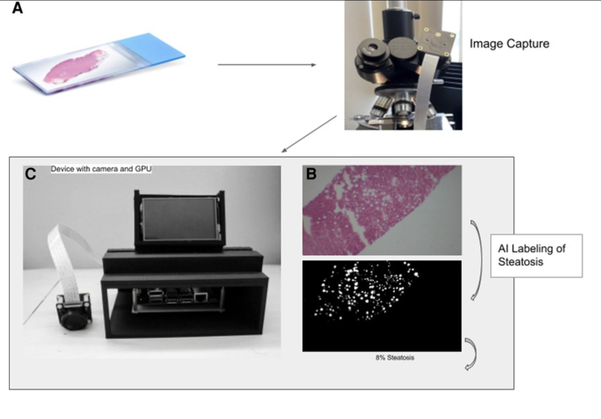

A point-of-care CV pipeline for donor-liver steatosis quantification: microscope capture on Jetson Nano, tiled U-Net segmentation, and on-device percent-steatosis scoring with strong cloud-level agreement (r = 0.9399).
Overview
The system runs on Ubuntu/Jetson Nano using Python, TensorFlow, OpenCV, and Argus API for camera ingestion. It captures biopsy images at 1080 x 720, applies quality/background filtering, tiles frames into 256 x 256 patches, performs U-Net inference, and aggregates per-pixel fat masks into a final steatosis percentage.
Validation (Frontiers 2023)
In the Frontiers in Transplantation brief report (full article), device-based scores on 33 donor-liver biopsy slides showed strong correlation with prior cloud analysis (r = 0.9399), demonstrating that near-real-time steatosis assessment can be performed offline at the donor site.
Some Features:
- Hardware: Jetson Nano GPU + 12.3 MP IMX477 microscope camera in a portable 3D-printed form factor.
- Segmentation Pipeline: Compressed U-Net inference on 256 x 256 tiles with per-pixel fat-vacuole masking.
- Quantification Logic: Automated artifact/background filtering and averaged steatosis scoring across sampled fields.
- Deployment Model: Offline on-device inference for low-connectivity settings, with optional cloud upload for downstream analysis.
- Empirical Validation: Device and cloud outputs were strongly correlated on 33 slides (r = 0.9399).